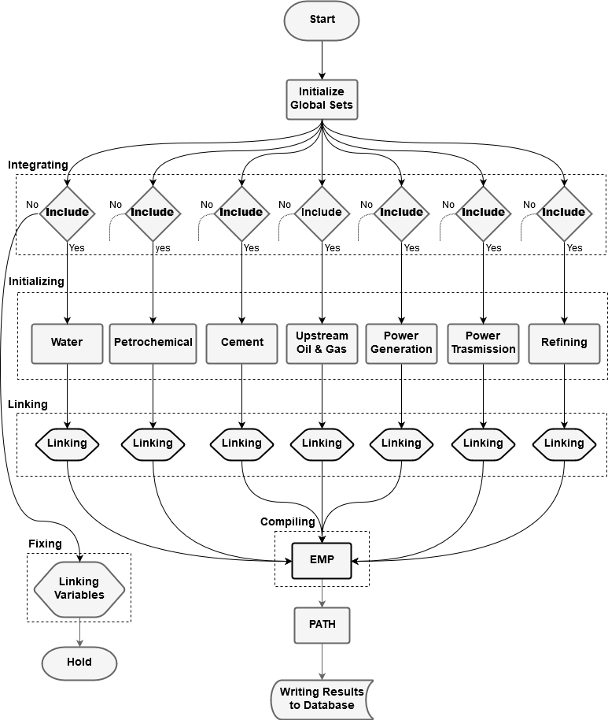

The model can be evaluated as a superior decision system because its design now allows the user to generate any type of policy. It has been restructured with a new code design to facilitate the user interaction; including a code refactoring (separating the equations from sets/parameters/variables declaration (described in Directory Structure)), and sets of integration and pricing flags, explained below.
Integration Logic
The integration flags (decision flags) in the model are used to either integrate/exclude a sector from the final model. It gives the user the ability to integrate a sector for certain country(s), meanwhile, exclude the same sector for other countries. This has been achieved by introducing unique flags for each sector and disaggregating the flags by countries. KEM follows divide and conquer paradigm; break down the main model into sub-models, configure the sub-models, and then rebuild the main model using the configured sub-models.
When the model gets compiled, each sub-model runs through sequential steps. These steps have two paths, shown in the figure 1 below; the first path, if the sector is integrated, the sub-model declares its own sets, parameters, private variables, linking variables, and equations. Then the sub-model defines its equations and generates its model block. The second path, if the sector is excluded, the sub-model declares its lining variables, fixes these variables to a baseline solution, and then hold. This means if a sector is excluded, its equations will not contribute to the final model.

Note:
-Integration: Check if a sector and country combination is included in the final model. Include the necessary equations.
-Fixing: If a sector is excluded fix its demand quantity and the market price (marginal supply value).
-Initializing: Initializing sectoral sets and reading the sectoral parameters from the database for each country.
-Linking: Link each sectors demand with the corresponding supply sector, and set the governing pricing rules
-Compiling: Compile optimal conditions given the pricing rules from linking stage.
Figure 1: Divide and Conquer scheme
Pricing Library
The current implementation of KEM has two types of pricing policies, Administered and marginal value; will be extended to include average cost pricing and price caps. One of the main issues in pricing policy implementations is resources scarcity when applying prices different than the marginal value. To overcome this issue, resource allocation constraints have been introduced in every sector, and only enforced when the prices have been set to administered prices.
The implementation of administered prices (fixed) is straightforward; it is basically setting the prices to some fixed parameters. This type of pricing policy is common in a regulated market, such as the GCC market, and an example of the administered prices is fuel prices in the GCC domestic market.
An average cost pricing policy is more flexible, in setting fixed prices, to the regulator in compare to the administered prices. The average cost can be computed by aggregating the supply cost of a given product and then dividing it by the total production.
A price cap policy (hybrid market) is setting the market prices to the marginal value up to a certain cap, established by the market regulator. This pricing policy requires more formulation using complementarity slackness (explained in Rioux et al. 2019).
As mentioned above, only administered and marginal values are implemented in the meantime. These two prices can be toggled using sectoral flags; all the inter-sectoral commodity (cross-cutting) activities have particular flags, aggregated by country, that can be used to switch between pricing policies. This implementation gives the user the freedom to have multiple pricing policies in the same scenario.
Directory Structure
To ease any future development and to help to maintain the model, a standard software development directory structure has been adopted for the model; the directory tree described below.
tree -d
.
├── build # compiled files and data queries
│ └── data # load curves, queries, and baseline solution
│ └── loadcurve # electricity load curves of the countries in the model
├── docs # KEM documentations
│ ├── images # images and icons needed for the repository
│ └── release # releases and highlight notes of KEM
├── future_integration # sectors to be integrated in the future
├── src # source code for the model
│ ├── data # parameters
│ │ └── query # parameters queries
│ ├── dynamicSets # dynamic sets configured on runtime
│ ├── equations # sub-models equations/functions code sources
│ ├── sets # sub-models sets
│ ├── share # shared sets, parameters, and variables across sectors
│ └── variables # sub-models variables
├── tools # tools and utilities for the model
└── trash # files to be deletedAgents
The number of agents in the model depends on the number of sectors and countries are integrated into the final model. Every sector for each country has been implemented as its optimizing agent. For example, if the integrated countries are KSA and UAE, and the integrated sectors are, upstream, power production, power transmission, water desalination, and emission; then, the number of agents are ten agents (two countries multiplied by five sectors).
Implementation
KEM is developed using General Algebraic Modeling System (GAMS) which is a high-level modeling system for mathematical programming and optimization. KAPSARC aims to provide a virtual environment to run the model so that it is accessible to all users. Everything else, including the data, is contained within the model files.
The source code for the model is located in the src directory, and have been split by sectors into several files such as data, sets, variables, and equations. Each subdirectory only contains its source code by definition; which means equation source code will not have any set/parameter/variable declaration nor data modification/manipulation. Following these rules makes it easy to manage a model regardless of its size.
The data source codes contain all the declaration and definition of the parameters and data calibration needed for a sector. Also, it includes the initial assumptions of a sector such as capacity limitation, investment and exports boundaries. The sets/variables/equations are defined and declared, if needed, in their subdirectory. The subdirectory share contains shared parameters/sets, parameters and sets used in more than one sub-model, and the declaration of the linking variables (commodities and prices).
Part of the model management and implementations is, having sub-model abbreviations which are used as a prefix for the sectoral sets, parameters, variables, and equations followed by a descriptive name, defined in the table 1 below. These abbreviations ease grasping the model code, and immediately recognizing the controlling agent of a specific variable when reading the source code. Additionally, for the cross-cutting activity variables, the variables start with the consuming sector abbreviation, followed by the supplier sector abbreviation, and then ending with a descriptive name. For example, crude and gas consumption by the power generation sector will have a variable name ELUPconsump.
| sub-model | Abbreviation |
|---|---|
| Upstream Oil and Gas | UP |
| Power Generation | EL |
| Power Transmission | TR |
| Water desalination | WA |
| Refinery | RF |
| Petrochemical | PC |
| Cement | CM |
| Emission | EM |
Table 1: Sectoral Abbreviations
Furthermore, KEM has been implemented with decision flags, integration and prices, used to configure the model based on the policy (explained in Flags). These flags give the user flexibility to generate a scenario with the least code modification.
Flags
The flags in the model are used to control sectoral integration, commodity prices per product, and trading among countries. The sectoral integration can be controlled by modifying integrate set which is aggregated over all the sectors and countries; setting integrate(‘UP’,’ksa’) to yes leads to incorporating the upstream sector for Saudi Arabia in the final model. The pricing policies can be generated by modifying the pricing flags; each sector has its flags which starts by the sector abbreviation followed by the supplier abbreviation and ending by pflags. For example, the price of MTBE soled by petrochemical to the refining sector can be toggled by setting RFPCpflag(MTBE,’ksa’) to 1 for marginal cost, or 2 for administered price. Table 2 shows all the integration and pricing flags in the model:
| Flag | Description |
|---|---|
| integrate | Sectoral integration in the final model |
| ELfuelpflag | Crude, Gas, and refined products bought by the power sector |
| WAfuelpflag | Crude, Gas, and refined products bought by the water sector |
| RFfuelpflag | Crude and Gas products bought by the refining sector |
| PCfuelpflag | Crude, Gas, and refined products bought by the petrochemical sector |
| CMfuelpflag | Crude, Gas, and refined products bought by the cement sector |
| WAELpflag | Prices for electricity consumed from the source by the water sector |
| TRELpflag | Prices for electricity consumed by the transmission sector |
| RFTRpflag | Electricity prices from the grid for the refining sector |
| PCTRpflag | Electricity prices from the grid for the petrochemical sector |
| CMTRpflag | Electricity prices from the grid for the cement sector |
| ELRETRpflag | Electricity prices for the residential consumption |
| ELWApflag | Electricity prices sold to the power sector from the water sector |
| RFPCpflag | Petrochemical products prices consumed by the refining sector |
| ELEMpflag | Emission taxes applied to the power sector |
| WAEMpflag | Emission taxes applied to the water sector |
| RFEMpflag | Emission taxes applied to the refining sector |
| PCEMpflag | Emission taxes applied to the petrochemical sector |
| CMEMpflag | Emission taxes applied to the cement sector |
Table 2: Integration and Pricing Flags
The model also has the ability to generate electricity using multiple pricing policies for different consumers, such as domestic and international demands. Therefore, the model can fulfill its domestic demand using regulated fuel; meanwhile, can sell electricity to other countries suing deregulated fuel. Furthermore, the model can control electricity produced using renewable technologies and whether to include it in the trading or not; table 3 describes the trading flags:
| Flag | Description |
|---|---|
| tradecap | Cap for electricity cross-countries trading |
| rentrade | Include electricity produced by renewable in the trade cap |
| fMPt | Fuel prices for trade power generating |
Table 3: Trade Policy Flags
Style Guide
KEM has been built with a style guide to ease maintaining and developing the model; including file naming, identifiers, syntax coding standards and commenting. The model files should have a descriptive names and have .gms extension. The identifiers (set, scalars, parameters, variables, and equations) in the model can be categorized into two categories; sectoral and global identifiers. The global identifiers should have a descriptive names; the sectoral identifiers should starts with the sectoral abbreviation followed by a description. If a sectoral identifier used for commodity consumption, it should start by the consuming sector abbreviation followed by the producer abbreviation and ending with a description. The only exception case in the model are dual variables which should always start with D followed by the associated primal equation/variable name.
Another style used in KEM is having a uniform indentation across the code, which is used to identify the start and the end of a block of code. Block of code is considered to be inside the declaration of sets, parameters, scalar, variables, and equations or definition of an equation; also, content of loops, summation, and “if statements” are considered blocks of code. The following code snippet shows the proper code indentation
set
t final model run time period /t1*t3/
;
variables
objval objective variable
.
.
;
equation
objective minimizing cost
;
objective..
objval=e=
sum(t,
(Imports(t)+Construct(t)+Opandmaint(t))*discfact(t))
;Comments in KEM are essential prior to any equation, which makes the code readable to other developer. The comments should contain abstract description of the equation, precondition/postcondition for the equation. The precondition should describe the required parameters for the equation, and the postcondition should describe the result of the equation. An example of a comment block is shown bellow:
**************************************
* Abstract: (The purpose of the equation)
* Precondition: (What needed to be done in order to run the equation)
* Postcondition: (What is the results of the equation)
**************************************For more in formation about style guide, please refer to this document style guide in docs directory.
Version Control
Version control is used to keep track of model modification as well as data calibration. The system used for version control is Git, an open source system. Also, Semantic Versioning (SemVer) is used to identify KEM’s releases. For more information about Git or SemVer, please use the provided links.
Compiler (EMP)
Extended Mathematical Programming (EMP) framework is an extension compiler to GAMS, which can be used to reformulate models. EMP uses JAMS, which is a GAMS solver, to create a scalar version of a given model, and to construct a reformulated model; some of these reformulated models are VI, MCP, NLP, and MIP.
KEM utilizes EMP to formulated the full MCP model, which requires deriving of the KKT stationarity conditions using the primal formulation. By using EMP, the number of equations in the full MCP needed to be constructed manually gets reduced to a half; therefore, it will save the developer a significant time and prevent any human errors. Generating the MCP model using EMP can be done by generating an “EMP statement” (described in Compiler Statement) that has the model type, optimization agent(s), primal endogenous variables/equations of each agent, and any implicit dual variable(s). After generating the EMP statement, the model can be solved using EMP solver, which will take care of generating the required model type as specified in the statement.
Compiler Statement
The EMP statement (compiler statement) has a generic syntax and the following steps describe generating a statement for equilibrium problems:
- First, create a file using ‘File’ command with the name ‘%emp.info%’. This specific name will allow GAMS to generate the file in the required path with the correct settings for the solver.
File myinfo /'%emp.info%'/;put myinfo 'equilibrium';put / 'min', agent_a;
put variables_a;
put equations_a;
put / 'min', agent_b;
put variables_b;
put equations_b;put / 'dualvar', dual_a, primal_eq_a;
put / 'dualvar', dual_b, primal_eq_b;putclose / myinfo;Looking at the provided steps, it is obvious that generating an EMP statement for a large model with numerous variables and constraints can be difficult; therefore, a Python script with scraping algorithm has been devised to help the developer automate generating the EMP statement; the script scrapes an existing model and automatically generate the EMP statement. This automation can be accomplished only if there is a name convention applied to the model, the case of KEM. The naming convention, prefixes and suffixes, helps the script to identify all the endogenous variables and equations of each agent, and write them for the solver.
Script will be published in the future
Solver (PATH)
PATH is one of the superior solver for MCP problem in GAMS, faster solution report and robust algorithms.